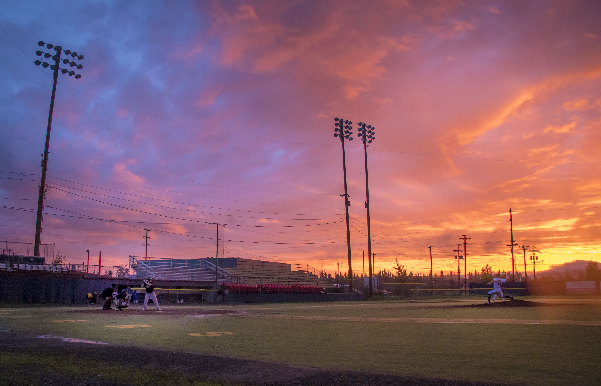

A beacon of hope: Fairbanks baseball shines through adversity
By Laura Stickells | June 22, 2020 | Fairbanks Daily News-Miner
The rain stopped completely during the seventh inning, exposing an intense gradient sky of violet, blue, orange and yellow at Growden Memorial Park for the 115th annual Midnight Sun Baseball game that started Saturday night and ended at 12:47 a.m. Sunday. Photo by Laura Stickells.
The Eielson-Brewers defeated the BlackSpruce-Pirates 15-13 in the 115th annual Midnight Sun Game, but no one in the bleachers or on the field seemed to care. All that mattered was that at 10 p.m. on the summer solstice, two teams took the field at Growden Memorial Park and played a baseball game using only the light from the sun. This year, that seemingly simple task was anything but.
Since the coronavirus shut down the sports world in March, getting two baseball teams on any field this summer has proven to be almost impossible.
Even the MLB, facing both a logistical nightmare brought about by a global pandemic and a nearly three- month stalemate between players and owners over multi-million dollar contract agreements, hasn’t finalized a plan to put two teams on a field.
At 7 p.m. Saturday, almost everyone had given up on the longstanding Fairbanks tradition, too. But inertia from the previous 114 consecutive years honoring America’s pastime under Alaska’s midnight sun would prove indomitable.
The tradition originated as a bet between two local bars, the Eagles Club and the California Bar, and the game has taken place every year since with the Alaska Goldpanners, the Fairbanks summer league team, becoming the host in 1960.
The Goldpanners were forced to cancel their 2020 season as a result of coronavirus, forgoing their role in the tradition for the first time in 60 years. And though the Fairbanks Adult Amateur Baseball League and the Alliance youth baseball league had rallied to play a seven-inning All-Star game in its place, a major rainstorm rolled into Fairbanks on Friday, soaking the city for 24 hours.
The summer storm, extreme even for Fairbanks, left Growden nearly unrecoverable. Three hours before first pitch, the yellow artificial turf base paths were swamped, dugouts were flooded and the outfield was saturated with water. The downpour had subsided to a light shower, but more rain was in the forecast.
The Alliance opted to pull the plug about four hours before first pitch. But Billy Robideau wasn’t going to let rain uproot 114 years of tradition.
“I just knew that we could make it work,” Robideau, who normally plays for the FAABL’s BlackSpruce, said after the game. FAABL president and Fairbanks native Christoph Falke didn’t need much convincing.
The two sent out a message to the league’s four teams, letting them know that despite the hours of rain and perpetual drizzle, the game was not canceled and to come to the field ready to play.
A total of 25 players from all four teams — BlackSpruce, Fairbanks Pirates, HooDoo Brewers and Eielson Icemen — answered the call.
Game umpires Sam Greenberg and Lionel Sotelo, who were signed up to call the All-Star game, also said they’d still partake.
“Everybody was excited to eat mosquitoes and keep the tradition going,” Falke said after the game, laughing as he spit out one of the bugs that swarmed the field. “But really, that was the motivation. Rain or shine, we’ve got to keep the tradition going.”
But despite the commitment from the players, cooperation from the field would be necessary to get the game started at 10 p.m., per solstice tradition.
Although the pitcher’s mound and home plate were mostly protected from the storm by a tarp, the rest of the artificial turf infield lay under almost an inch of water.
Players grabbed brooms and began attempting to sweep the infield dry. Others used wheelbarrows to remove mud and bring in fresh dirt. A small industrial pump made quick work of the massive puddles at the backstop and in the dugouts.
Meanwhile, about 30 minutes before first pitch, as players were still hustling around the field, Willa Watts, who had been asked earlier in the week to sing the national anthem, arrived at the scene and was perplexed by the chaos.
Upon arriving at the field, Watts called her contact from the Alliance, who told her, much to her confusion, that the game had been canceled.
“When I arrived, there was clearly still a game that was going to be played, and I was already here, so I figured I’d just sing anyways,” Watts said in the press box during the second inning, 20 minutes after kicking the game off with the anthem at 10 p.m.
“Of course we all like the Goldpanners and the Goldpanners games, but to me it doesn’t matter who’s playing,” she added as two baserunners from the Eielson-Brewers crossed home plate. She made two tallies on a napkin.
(No one was manning the scoreboard.)
About 40 others had also heard word of the canceled-and-then-un-canceled tradition and were spread out in the stands below. Some friends and families huddled under umbrellas, others covered themselves with blankets, but most just sat out in the rain.
Fairbanks resident Rif Rafson and his son Joe sat in the front row to the right of home plate. For them, there was little question as to whether or not they would be at Saturday’s game.
“Our slogan is we seek out the best game in town,” Rif said, “and today this is definitely the best game in town.”
“Normally though, when things are a little more normal, there are a few more options,” Joe added.
Wynola Possenti, a longtime Fairbanks resident, sat alone under a small strip of shelter beneath the press box. Despite having lived 56 years in the Golden Heart City, Possenti had only been to a handful of Midnight Sun Games, the last being over 40 years ago.
But this year, she felt she should make the trip back out to Growden.
“It just seemed like they would need the support,” Possenti said. “I know it rains other nights when there’s games, but it’s just different with the COVID-19.”
The small crowd indeed paled in comparison to that of a normal year. The summer tradition Baseball America previously dubbed as one of “12 Must-See Events for the Baseball Fan” typically draws over 3,000 spectators from across the country.
In the top of the fifth inning, when the clock hit midnight, Watts’ voice projected back over the field for the Alaska Flag Song, a Midnight Sun Game tradition.
For Falke, hearing Watts sing the state song made the pick up game feel like a real Midnight Sun Game and not just a baseball game played at midnight.
Falke’s statement carries some weight considering he spent the summers of 1994 and 1996 as a pitcher for the Goldpanners. He was on the roster for the solstice game both seasons, but the local product never stepped on the mound.
“There were a couple chants for the local kid — ‘We want Christoph! We want Christoph!’ — but it still didn’t get me in the game,” Falke said, remembering the previous times he partook in the solstice tradition.
But he made it on the mound this year, providing relief for the BlackSpruce-Pirates in the fourth inning and returning for the fifth and sixth.
A double rainbow slowly emerged after the drizzle completely subsided in the bottom of the fifth inning. By the last couple of outs, the arc dominated right field and stretched over the press box. The pastel sunset, which glowed in left field most of the game, had developed into a vibrant swirl of pink and orange.
A strikeout signaled the end of the game at 12:47 a.m.
Although the event looked nothing like the one that the Goldpanners had put on for the last 60 years, after watching seven innings of outfielders fishing balls out of puddles and players swatting away hordes of mosquitoes the size of quarters all for the sake of tradition, it was impossible to say the spirit of the event was anything but true.
In a time of darkness and uncertainty around the baseball world shrouded by the effects of a once-in-a- lifetime virus and a tense stalemate over money, the small game at the top of the world shone bright as a beacon of hope and perseverance — illuminated, as always, by only the glow of the midnight sun.
“I think I need to let it sink in a bit that we actually kept this game going,” Falke said before mosquitoes finally pushed him off the field.
“And I’m so happy these other players showed up, even though they were at home and it was pouring down rain.”
To learn more about the FAABL, visit the Fairbanks Adult Amateur Baseball League Facebook page. To join a team contact Falke at 347-8600.